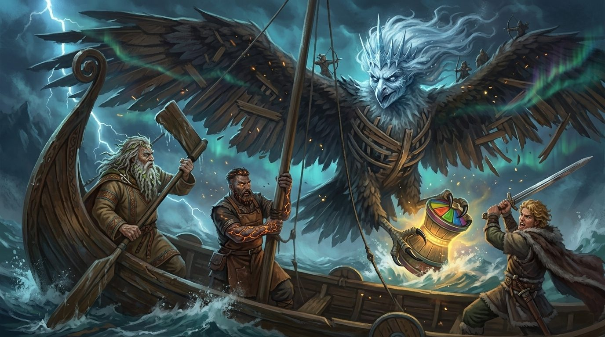
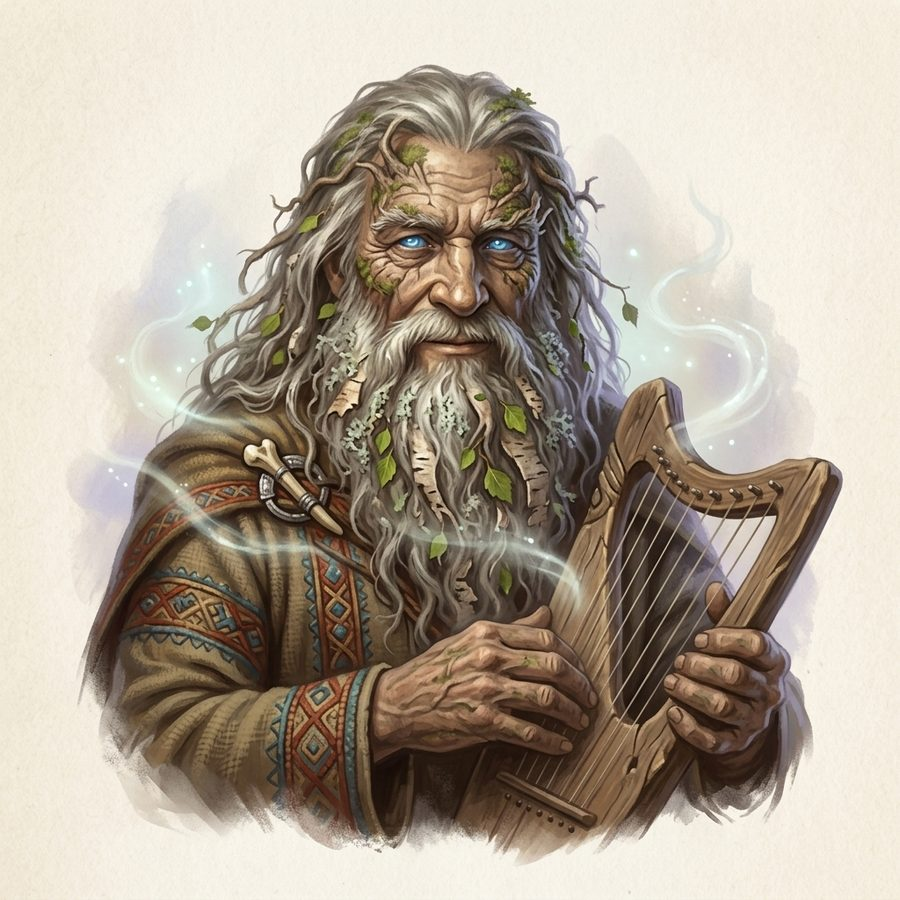
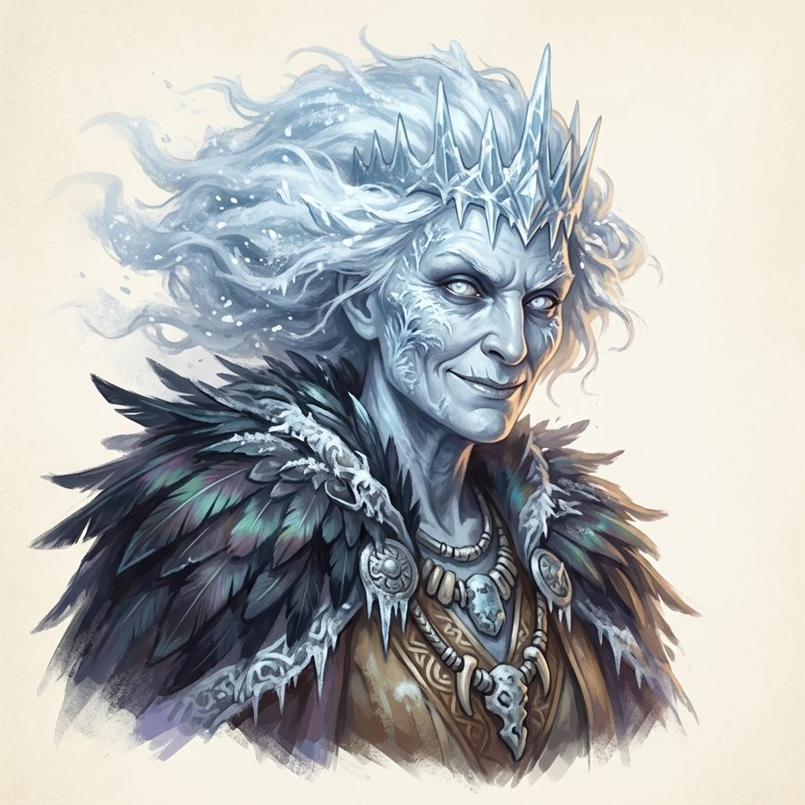
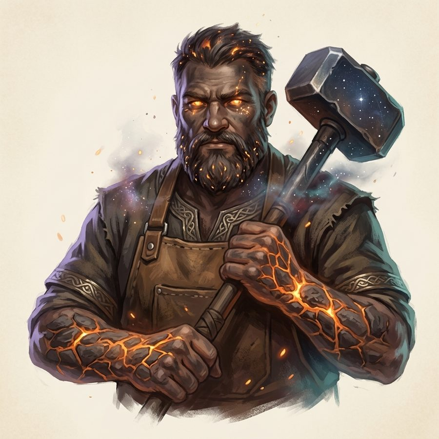
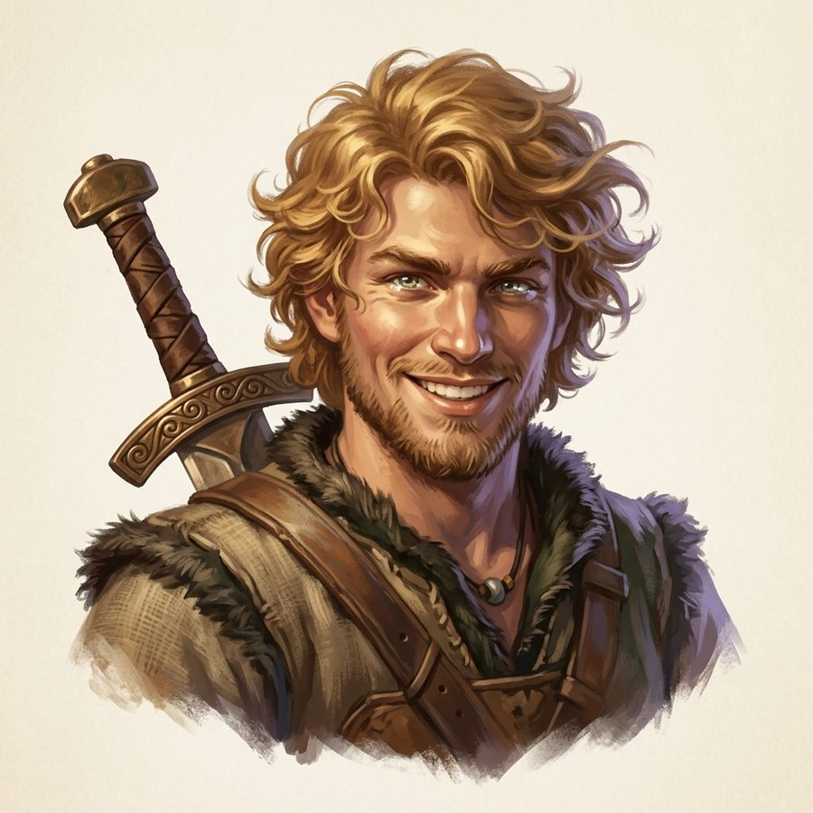

Fins · · 10 min lezen
De Sampo
De wondermolen van het Noorden, gesmeed en gestolen

Ver in het noorden, voorbij de laatste bossen, ligt Pohjola. Het is een land van mist en ijs, waar de winter lang is en de zon zuinig. Daar heerst Louhi, de tandeloze vrouw van het Noorden. Ze is oud, sluw en machtig, en ze kan van gedaante veranderen wanneer ze maar wil. Ze heeft een dochter die mooier is dan de dageraad, en ze wil iets wat niemand bezit.
Dit is het verhaal van dat ding. De Finnen noemen het de Sampo.

Een pijl uit wraak
Väinämöinen was de oudste en wijste zanger van het land Kalevala. Hij was geboren uit de luchtgeest Ilmatar, en zijn liederen waren geen gewone liederen: wat hij zong, gebeurde. Hij kon met een lied een jongeman tot aan zijn kin in het moeras laten wegzakken. Dat was precies wat hij ooit had gedaan met de jonge Joukahainen, toen die hem uitdaagde tot een zangwedstrijd. Joukahainen had zich vrijgekocht, maar hij vergat het nooit.
Toen Väinämöinen op een dag naar het noorden reed om in Pohjola een bruid te zoeken, lag Joukahainen op hem te wachten met een kruisboog en drie vergiftigde pijlen. Zijn eigen moeder smeekte hem het niet te doen. Hij schoot toch. De eerste pijl vloog over Väinämöinens hoofd de wolken in. De tweede sloeg in de grond. De derde trof het paard in de schouder.
Väinämöinen viel in zee, en een stormwind dreef hem weg van alle kusten. Acht dagen en acht nachten zwom hij, tot zijn teennagels losraakten. Toen dook er een adelaar uit de lucht. Lang geleden, toen Väinämöinen het eerste bos liet kappen, had hij één berk laten staan zodat de vogels een plek hadden om te rusten. Dat was de adelaar niet vergeten. Hij nam de oude man op zijn rug en zette hem neer op een kale landtong, aan de rand van Pohjola.
Daar zat Väinämöinen drie dagen te huilen, ver van huis.
De prijs van Louhi
Het meisje van Pohjola hoorde hem als eerste, toen ze 's ochtends vroeg de kamer veegde. Ze vertelde het aan haar moeder. Louhi roeide naar de landtong, nam de verdwaalde zanger mee naar huis en gaf hem te eten. Pas daarna noemde ze haar prijs.

'Wil je terug naar huis? Smeed dan voor mij de Sampo. Smeed hem uit de punt van een zwanenveer, uit de melk van een koe die nog nooit gekalfd heeft, uit één enkele gerstekorrel en uit de wol van een lammetje. Geef hem een deksel in alle kleuren. Doe je dat, dan krijg je mijn dochter.'
Väinämöinen kon dat niet. Maar hij kende iemand die het wel kon. 'Thuis woont Ilmarinen, de smid,' zei hij. 'Hij heeft de koepel van de hemel gesmeed. Er zit geen naad in, geen spoor van zijn hamer. Als iemand de Sampo kan maken, is hij het.' Louhi beloofde haar dochter aan wie de Sampo voor haar smeedde, en liet Väinämöinen met een slee naar huis brengen. Eén ding moest hij haar beloven: onderweg mocht hij niet omhoog kijken.
Natuurlijk keek hij omhoog. Boven hem zat het meisje van Pohjola op de regenboog, gouden draad te weven op een zilveren weefgetouw. Väinämöinen vroeg haar met hem mee te gaan. Ze gaf hem opdrachten: een haar splijten met een bot mes, een ei strikken met een onzichtbare strik, een zweep snijden uit ijs zonder dat er splinters vielen. Het lukte hem allemaal. Maar bij de laatste opdracht, een boot bouwen uit de splinters van haar spinrok, greep de boze geest Hiisi zijn bijl. Het blad schoot weg en sneed diep in Väinämöinens knie. Het meisje bleef op haar regenboog, en de zanger reed bloedend verder.
Een maan in de boom
Ilmarinen had geen zin om naar Pohjola te gaan, dat land van mist dat mensen opeet. 'Zolang de maan schijnt, ga ik daar niet heen,' zei hij. Ook niet voor een bruid.

Väinämöinen was oud, maar niet dom. Op een open plek zong hij een reusachtige spar omhoog, zo hoog dat de top in de hemel verdween. Toen zong hij de maan in de takken en het sterrenbeeld de Grote Beer in de top. Hij ging naar de smid en vertelde terloops dat hij een spar had gezien met de maan erin. Ilmarinen geloofde er niets van, maar ging toch kijken. En daar hing het: maanlicht tussen de naalden, en hoog in de top de Grote Beer.
'Klim maar,' zei Väinämöinen, 'en haal de maan voor ons naar beneden.'
Ilmarinen klom. En toen hij hoog genoeg zat, zong Väinämöinen een stormwind. De wind rukte de smid uit de boom en blies hem langs de wolken naar het noorden, tot hij neerkwam op de binnenplaats van Louhi.
Vier dagen smeden
Louhi liet haar dochter haar mooiste kleren aantrekken, en toen Ilmarinen het meisje zag, stemde hij toe. Maar Pohjola had geen smidse. Drie dagen zocht hij naar een geschikte plek, tot hij een rots vond in de kleuren van de regenboog. Drie dagen bouwde hij een oven en een blaasbalg. Toen gooide hij het zwanenveertje, de melk, de gerstekorrel en de wol in het vuur, en de knechten van Louhi bliezen de balg.
Op de eerste dag kwam er een gouden boog uit het vuur, met zilveren punten. Hij was prachtig, maar hij was kwaadaardig: hij eiste elke dag een slachtoffer, en op feestdagen twee. Ilmarinen brak hem in stukken en gooide hem terug in het vuur.
Op de tweede dag kwam er een paarse boot uit, met gouden ribben en koperen roeiriemen. Maar die boot zocht ruzie. Hij stormde op elke strijd af die hij kon vinden. Ilmarinen brak hem.
Op de derde dag kwam er een vaars uit met gouden horens, de Grote Beer op haar kop en de zon op haar voorhoofd. Ze was humeurig en rende door bos en moeras, en verspilde haar melk onderweg. Ilmarinen sneed haar in stukken.
Op de vierde dag kwam er een ploeg uit met een gouden schaar en zilveren handvatten. Die ploeg ploegde dwars door velden die al ingezaaid waren en door de beste weilanden. Ilmarinen brak ook die.
Toen was hij het zat. Hij riep de vier winden. Drie dagen en drie nachten bliezen ze het vuur op, tot de vlammen uit de ramen sloegen. En op de derde avond, toen Ilmarinen in de oven keek, zag hij de Sampo oprijzen.
Hij had drie kanten. Aan de ene kant maalde hij meel, aan de tweede zout, aan de derde geld. Erop zat een deksel in alle kleuren. Elke ochtend maalde hij drie maten: één om op te eten, één om te verkopen en één om te bewaren.
Louhi was dolgelukkig. Ze bracht de Sampo naar de koperberg van Pohjola, zette er negen sloten op en liet drie wortels om hem heen groeien. Eén wortel groeide de berg in, één de zeebodem en één de aarde onder haar huis. Ze gingen negen vadem diep.
En het meisje? Dat wilde niet mee. Ze wilde vrij blijven, en luisteren naar de koekoek in haar eigen land. Ilmarinen voer alleen naar huis, met een gebogen hoofd. 'Louhi heeft de Sampo,' zei hij tegen Väinämöinen. 'En ik heb geen bruid.'
Drie helden op zee
Jaren gingen voorbij. Pohjola werd rijk. Er groeide graan waar vroeger rotsen waren, en Louhi's voorraadschuren raakten nooit leeg. In Kalevala hoorden ze ervan, en Väinämöinen besloot dat het tijd was om de Sampo te gaan halen, of ten minste een deel ervan.
Ilmarinen smeedde een zwaard van vuur voor hem. Väinämöinen vond aan de oever een oorlogsschip dat stond te treuren omdat niemand het ooit gebruikte, en zong het in het water. Onderweg kwam er een derde bij: Lemminkäinen, een roekeloze jonge held die nooit een avontuur liet schieten.

Ver op zee liep het schip ineens vast. Niet op een rots, maar op de rug van een reusachtige snoek. Lemminkäinen hakte erop in en viel overboord. Ilmarinens zwaard brak. Pas Väinämöinens zwaard van vuur doorboorde de vis. Ze aten de snoek op, en toen alleen de botten over waren, kreeg de oude zanger een idee. Van de kaken maakte hij het frame van een harp, van de tanden de stemhaken. De snaren maakte hij van het haar van het paard van de boze geest Hiisi.
Zo ontstond de eerste kantele, de Finse harp. Niemand kon erop spelen: in andere handen krijste hij alleen maar. Maar toen Väinämöinen hem op zijn knieën legde, kwamen de dieren uit het bos en de vissen uit de zee om te luisteren, en iedereen die het hoorde begon te huilen.
Een slaaplied
In Pohjola vroeg Väinämöinen beleefd of ze de Sampo konden delen. 'Je kunt een patrijs niet verdelen tussen drie mannen,' zei Louhi, 'en een eekhoorn ook niet.' Ze riep haar krijgers.
Väinämöinen pakte zijn kantele en begon te spelen. Eén voor één zakten de krijgers van Pohjola in slaap, en de oude zanger sloot hun oogleden met slaappijlen, zodat ze niet zomaar wakker konden worden.
Bij de koperberg zong hij tot de rotsdeuren trilden. Ilmarinen smeerde boter op de scharnieren en de sloten, en de grendels schoven vanzelf open. Lemminkäinen ging naar binnen om de Sampo te halen, maar hij kreeg hem niet van zijn plek: de wortels zaten negen vadem diep. Dus spande hij een grote os voor de ploeg van Pohjola en ploegde de wortels los. De Sampo kantelde, en ze droegen hem naar het schip.
Alles ging goed, tot Lemminkäinen op zee besloot een lied te zingen. Zingen kon hij niet. Een kraanvogel schrok zich wild van het gekrijs, vloog naar Pohjola en maakte iedereen wakker.
De adelaar van het Noorden
Louhi zag de open berg en de lege plek waar de Sampo had gestaan. Ze riep alles op wat ze had. Eerst kwam er mist, die het schip drie dagen vasthield. Toen het zeemonster Iku-Turso, dat Väinämöinen bij zijn oren uit het water trok en liet beloven nooit meer terug te komen. Toen een storm, waarin de kantele overboord sloeg en voor altijd in de zee verdween.
Toen kwam Louhi zelf, met een oorlogsschip vol zwaardvechters en boogschutters. Väinämöinen gooide een stukje vuursteen uit zijn tondeldoos in zee, en er rees een klip op. Louhi's schip liep erop te pletter.
Maar Louhi gaf niet op. Van de wrakstukken maakte ze zichzelf een nieuw lichaam: een reusachtige adelaar. Zeisen en sikkels werden haar klauwen, planken en spanten haar vleugels en borst. Duizend boogschutters zaten in haar veren, honderd in haar staart. Ze streek neer op de mast, en het schip dreigde te kapseizen.
'Laten we de Sampo delen,' riep Väinämöinen nog. Louhi weigerde. Ze greep de Sampo in haar klauwen. Lemminkäinen trok zijn zwaard en hakte haar tenen af, op één na. Väinämöinen rukte het roer los en sloeg ermee op de adelaar, tot haar krijgers in zee vielen.
Met haar laatste teen greep Louhi de Sampo nog één keer en trok hem over de rand van het schip. Hij viel in zee, zonk naar de bodem en brak in stukken.
Wat overbleef
De meeste stukken bleven in de zee. Daarom, zeggen de Finnen, is de zee zo rijk aan vis en schatten. Een paar stukken spoelden aan op de kust van Kalevala, en Väinämöinen verzamelde ze. Hij plantte ze in de grond en voorspelde dat daar voortaan graan zou groeien en dat er geluk zou zijn in zijn land.
Louhi vloog naar huis met alleen het kapotte deksel. Daarom, zeggen de liederen, is Pohjola tot op de dag van vandaag arm.
'Ik zal de maan in de rotsen verstoppen en de zon in de berg,' schreeuwde ze nog. 'Ik stuur je vorst, hagel en ziekten, en een beer uit het bos.' Väinämöinen haalde zijn schouders op. Wat er met zijn land zou gebeuren, zei hij, besliste Ukko, de oppergod, en niet zij.
Louhi zou die dreigementen nog uitvoeren. Maar dat is een ander verhaal.
Achtergrond
Waar komt dit verhaal vandaan? Uit de Kalevala, het nationale epos van Finland. Het is geen oud boek, maar een verzameling volksliederen die de arts Elias Lönnrot in de negentiende eeuw optekende bij zangers in Karelië en Finland. Hij voegde ze samen tot één lang verhaal, voor het eerst in 1835 en in zijn definitieve vorm in 1849. Dit verhaal komt uit de runen (liederen) 6 tot 10 en 39 tot 43.
Lönnrot was ook een schrijver. Hij koos zelf welke versies hij gebruikte en verbond ze tot een doorlopend verhaal. In sommige oudere volksliederen gaat Ilmarinen vrijwillig naar Pohjola en komt hij wél thuis met een bruid. In andere versies stelen Väinämöinen en Joukahainen de Sampo samen, en breekt hij in drie stukken: één maakt de zee zout, een ander laat het hooi groeien.
Wat is de Sampo eigenlijk? Dat weet niemand, en daar wordt al tweehonderd jaar over gediscussieerd. Lönnrot zag er een molen in. Andere uitleggen zijn een wereldboom of wereldpilaar die de hemel draagt, de zon, een sjamanentrommel van de Samen, een kompas, een schatkist of een schild. Een oude bijnaam is kirjokansi, 'het bonte deksel', en dat deksel heeft misschien met de sterrenhemel te maken.
Een land vol liederen. De Kalevala verscheen toen Finland onder Russisch bewind stond en veel Finnen nog Zweeds spraken. Het boek gaf het land een eigen verhaal en speelde een grote rol in de Finse onafhankelijkheid. 28 februari is in Finland nog steeds Kalevaladag. De kantele, de harp uit dit verhaal, is het nationale instrument. En Tolkien was zo onder de indruk dat de Kalevala zijn eigen mythologie inspireerde.
Bronnen
- Elias Lönnrot, Kalevala (1849), runen 3 en 6-10, 39-43, vertaling J.M. Crawford (1888), via Wikisource, onder meer Rune X en Rune XLIII
- Sampo, Wikipedia, over de uitleggen en de volksversies
- Louhi en Ilmarinen, Wikipedia
- Kalevala, Wikipedia